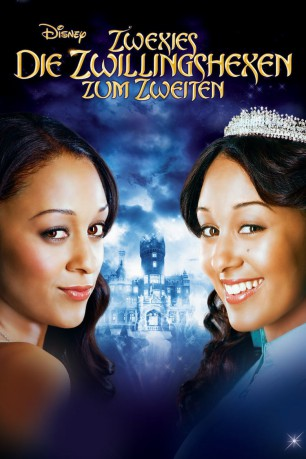

#9629 Zwexies - Die Zwillingshexen zum Zweiten
Alternativ: Twitches Too
 
 IMDB-Wertung: 5.8 / 10
IMDB-Wertung: 5.8 / 10  Metascore: 0
Metascore: 0 
Alex und Camryn versuchen sich mit ihrem neuen Leben als Zwillingshexen zu arrangieren. Doch dann erfahren sie, dass ihr im Schattenland des magischen Königreiches Coventry verschollener Vater noch am Leben sein soll. Die beiden unterschiedlichen Schwestern machen sich gemeinsam auf die Suche nach ihm. - Ein märchenhaftes Abenteuer rund um geheimnisvolle Orte, dunkle Mächte und zauberhafte Schwestern.
Jahr: 2007
Dauer: 79 Minuten
FSK:
Land: USA Studio: Disney ChannelTonspuren: DD2.0 - ,
Untertitel:
Auflösung: 1080p (1920x1080) Größe: 5068 MB
Genre: Drama, Fantasy, Familie
Regisseur: Stuart Gillard
Drehbuch: Dan Berendsen, H.B. Gilmour, Randi Reisfeld
Soundtrack: John Van Tongeren
Darsteller:
- Tia Mowry-Hardrict als Alex Fielding
- Tamera Mowry-Housley als Camryn Barnes
 Kristen Wilson als Miranda
Kristen Wilson als Miranda Patrick Fabian als Thantos
Patrick Fabian als Thantos- Leslie Seiler als Ileana
- Pat Kelly als Karsh
 Karen Holness als Emily Barnes
Karen Holness als Emily Barnes Arnold Pinnock als David Barnes
Arnold Pinnock als David Barnes- Nathan Stephenson als Marcus
 Jayne Eastwood als Mrs. Norseng
Jayne Eastwood als Mrs. Norseng- Kevin Jubinville als Aron
 Anna Hardwick als Talking Statue #1
Anna Hardwick als Talking Statue #1 Joe Cappelletti als
Joe Cappelletti als - Laura Summer als
- Chris Gallinger als Demitri
- Jackie Rosenbaum als Beth
- David Ndaba als Felix
- Donna Croce als Talking Statue #2
- Chico the Donkey als Mrs. Karsh
- Harrison Hapin als Officer 1
Datei: X:\2-Dilogie(N-Z)\Zwexies\Zwexies - Die Zwillingshexen zum Zweiten (2007, FSK, 1920x1080).mkv seit 21.09.2018
Festplatte: HD Collection-2(A-Z)-3(A-M)
 Alle Filme aus Gruppe '2-Dilogie(N-Z)\Zwexies'
Alle Filme aus Gruppe '2-Dilogie(N-Z)\Zwexies'